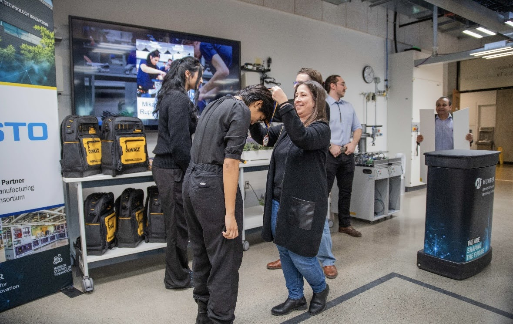
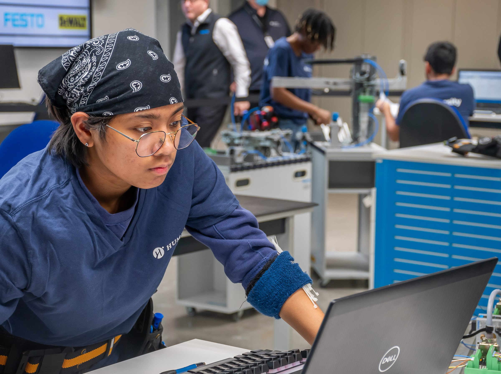
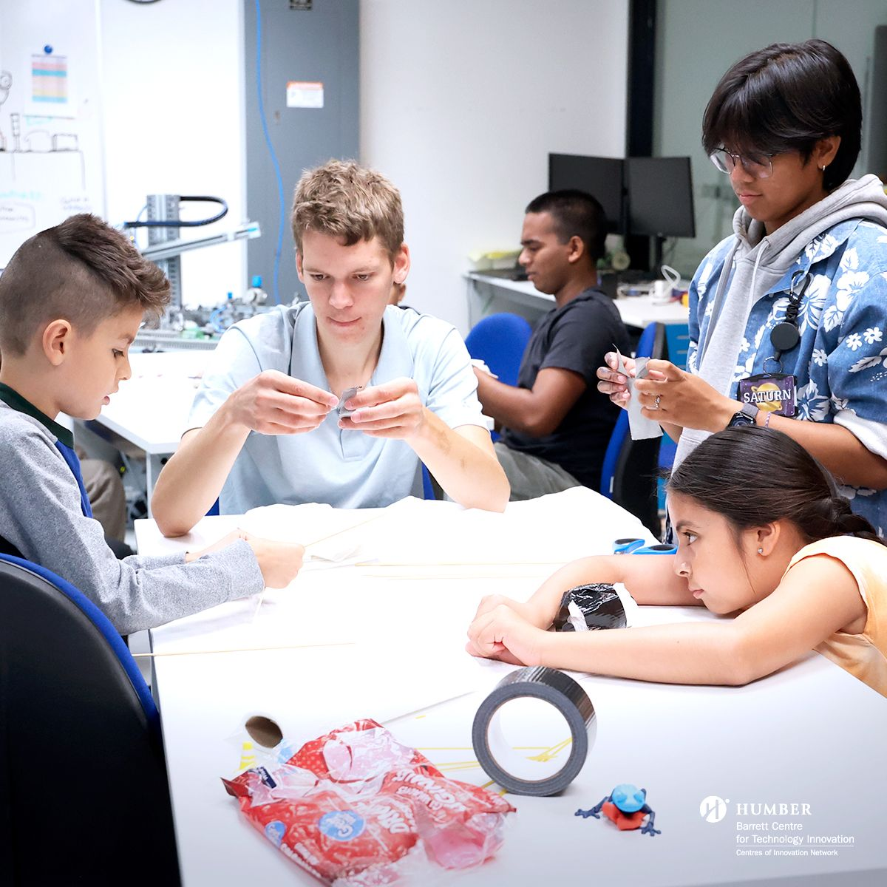
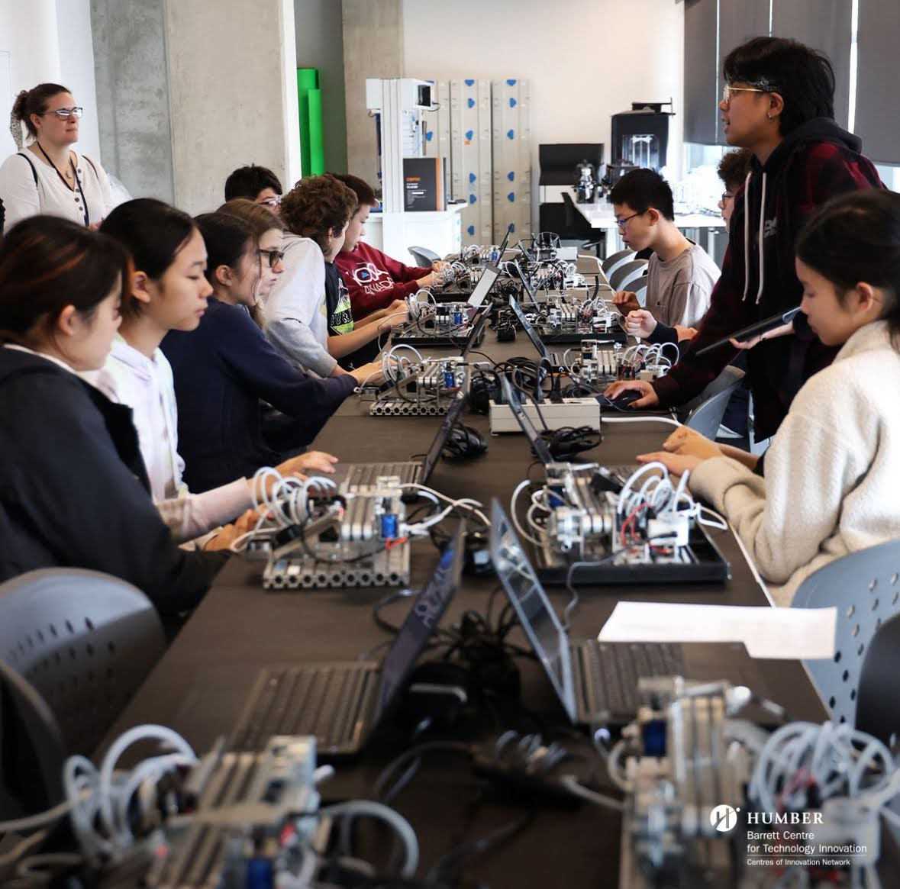
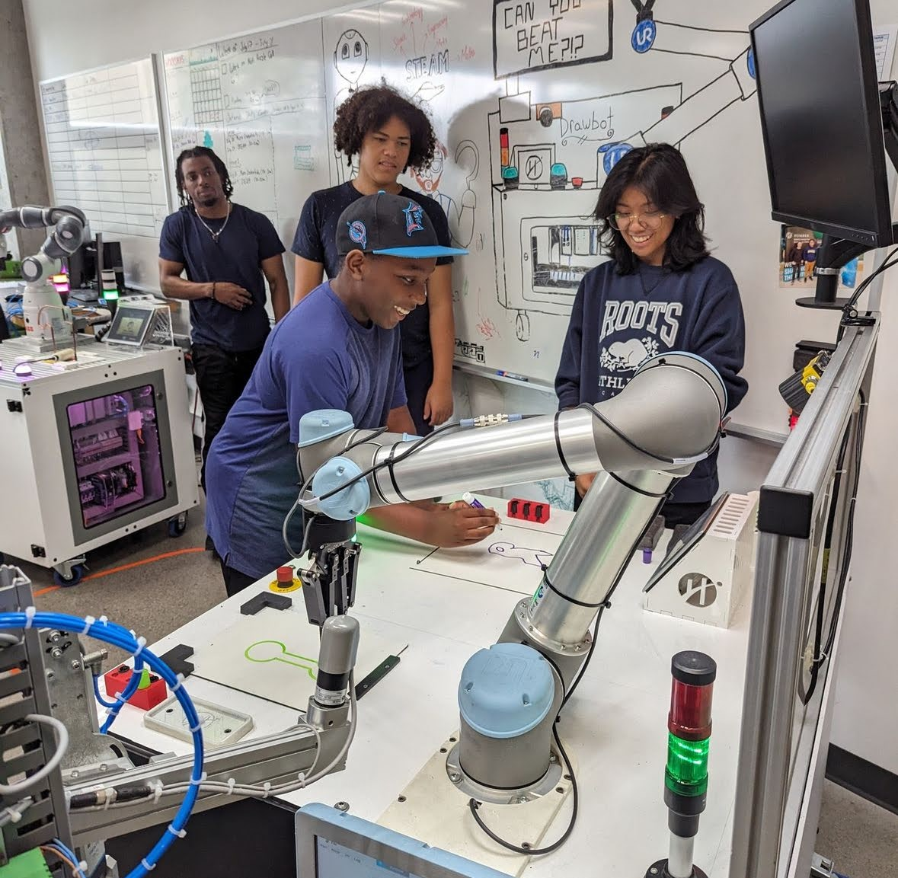

My name is Mikayla Remolacio. I was born on December 19th, 2004. I grew up here in Canada. I currently work at the Barrett Centre for Technology Innnovation as a STEAM Developer and a Mechatronics Skills Mentor.
Before starting this program, I studied Electromechanical Engineering here at Humber. I decided to switch to Computer Programming because between the projects between school and work, I enjoyed programming the most. I realised part way though electromech that the study of electrical components didn't interest me.
From my early days, I’ve always been driven by a sense of curiosity—whether it was tinkering with gadgets, solving problems, or simply wondering how things work. That curiosity led me to the world of STEM, where I found a passion for both creation and innovation.
My Proudest Moments
Being a Mechatronics Skills Competitor
I competed in Mechatronics Skills twice, which was an incredible opportunity to challenge myself and apply both my technical knowledge and problem-solving abilities. These competitions pushed me to think creatively and work under pressure, as I had to troubleshoot and solve complex mechanical and electrical problems. Participating twice not only improved my hands-on skills but also taught me the importance of teamwork, precision, and time management. It was a rewarding experience that strengthened my passion for technology and engineering, while also preparing me for future challenges in my field.


Inspiring the Younger Generations
As a STEM developer, I am passionate about teaching kids about the STEM field and inspiring them to explore the possibilities it offers. Through workshops and hands-on activities, I introduce them to concepts in science, technology, engineering, and math in a fun and engaging way. My goal is to spark their curiosity and show them how STEM can be used to solve real-world problems. By sharing my own experiences and the exciting opportunities in the field, I hope to encourage them to pursue a career in STEM, knowing that they can make a meaningful impact in the future.



What I do Outside of School and Work
Photography, skateboarding, and playing guitar are three hobbies that allow me to express my creativity and passion in unique ways. Through photography, I capture the world as I see it, finding beauty in small details and freezing moments in time. Skateboarding offers me a sense of freedom and adrenaline, pushing my physical limits while enjoying the thrill of movement. Meanwhile, playing guitar allows me to explore my musical side, creating melodies and rhythms that resonate with my experiences. Each of these hobbies challenges me and brings joy, whether I’m landing a new trick, framing the perfect shot, or strumming a favorite tune.